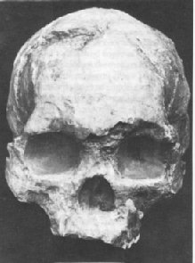

Versteckte Dubois den Wadjak-Menschen?

Gish (1985) and many other creationists have claimed that Eugene Dubois, discoverer of Java Man, hid the existence of two human skulls, called the Wadjak skulls, that had also been discovered on Java. This claim is demonstrably false; there are three separate publications by Dubois which mention the Wadjak skulls (Fezer, 1993).(Wadjak 1 (gezeigt) wurde 1888 vom Bergbauingenieur B.D. van Rietschoten entdeckt. Wadjak 2 war fragmentarischer und wurde 1890 von Dubois entdeckt.)
Lubenow gibt die Existenz dieser Veröffentlichungen zu, argumentiert jedoch, dass es sich um Regierungsberichte handelte, die nicht für öffentliche oder wissenschaftliche Prüfung bestimmt waren. Daher zählen sie nicht als Teil der wissenschaftlichen Literatur, und Dubois ist immer noch schuldig, die Existenz der Wadjak-Schädel im Grunde verschleiert zu haben.
Nachfolgend finden Sie einige E-Mail-Korrespondenzen von dem prominenten Paläoanthropologen
C. Loring Brace, die auf diese creationistische Behauptung antworten.
Datum: Mon, 22 Jan 1996 17:33:37 -0500 (EST)
Von: "C. Loring Brace" <clbrace@umich.edu>
An: Jim.Foley@symbios.com
Betreff: Re: Sinanthropus/Pithecanthropus
Liebe/r Kollegin/Kollege,
[zwei Absätze gelöscht]
Was Wadjak betrifft, wurde der erste Schädel dem Dubois durch den Bergbauunternehmer van Rietschoten übergeben. Dubois beschrieb ihn in einem Brief an Dr. Ph. Sluiter (Direktor der Bibliothek und des Museums in dem, was damals „Batavia" hieß), der im Naturkundig Tijdschrift van Nederlandsch-Indie [1] Bd. 49 (1890) S. 209-211 veröffentlicht wurde. Dieser wurde am 14. März 1889 auf der Direktorenversammlung vorgelesen. Die Zeitschrift war kein großes Phänomen wie Nature oder sogar die Veröffentlichung des American Museum of Natural History, aber sie wurde weit verbreitet und in Europa und Amerika erhältlich. Unsere Bibliothek hier in Michigan besitzt sie, und ich habe vor Jahren (oder vielleicht sogar die in Peabody an der Harvard University) die Kopie der University of California gelesen.
Das war der Grund, warum Dubois von Sumatra nach Java zog, wo er in den vorherigen Jahren tätig gewesen war, und nachdem er dort angekommen war, veröffentlichte er regelmäßige vierteljährliche Berichte im Verslag van het Mijnwezen, den Hrdlicka als Government Mining Bulletin übersetzt. Ich weiß nicht, wie dies unter Bildung, Religion und Industrie [2] subsumiert wird, aber es handelte sich um einen technischen Bericht, der sich auf Fragen der Mineralressourcen konzentrierte, obwohl er auch allgemeine Naturgeschichte und insbesondere Paläontologie enthielt. In seinem Bericht, der in jeder Ausgabe mit dem Titel "Palaeontologische onderzoekingen op Java" versehen war, erwähnte er die van Rietschoten-Funde im 2. kwartaal 1890 auf Seite 19 und stellte fest, dass es sich um "eine andere Rasse als die der Malaien" handelte. In seinem Bericht für das 3. kwartaal 1890 beschrieb er seinen Fund von Wadjak II auf Seite 15 und stellte fest, dass dieser, wie Wadjak I, auf das Vorhandensein "in Java in früheren Zeiten einer menschlichen Rasse, die mit modernen Australiern (oder Papuas) verglichen werden kann" (S. 15) hinwies.
Daraufhin wiederholt er dies im Jaarboek van het Mijnwezen in Nederlandschen Oost-Indie 20(2):60-61 im Jahr 1892. Alle diese Berichte, obwohl sie keine Hauptpublikationen sind, sollten tatsächlich als ein legitimer Teil der wissenschaftlichen Literatur betrachtet werden. Sie sind in großen Bibliotheken auf der ganzen Welt verfügbar und wurden wiederholt von den Personen erwähnt, die weiterhin weitere Analysen des Wadjak-Materials durchgeführt haben. Keith [3] war nicht sehr gut darin, die Primärliteratur zu zitieren, und konnte weder Deutsch (noch geschweige denn Niederländisch) als wissenschaftliche Sprache verwenden. Ich musste Dubois' Berichte lesen, indem ich mich schwer mit den Rechtschreib-/Klangverschiebungen herumschlug, die es in das Deutsche verwandeln, doch, als ich meine Übersetzungen bezweifelte, habe ich sie mit einem Kollegen überprüft, der fließend Niederländisch spricht. Dubois fühlte eindeutig, dass sein „Pithecanthropus"-Material von großer Bedeutung war, und er dokumentierte, was er für sein pliozänes Alter hielt, in einer voll kreditwürdigen Weise. Durch den faunistischen Inhalt zeigte er eindeutig, dass Wadjak spät pleistozän war, was er für relativ unwichtig hielt, weshalb er ihm bis nach dem Ersten Weltkrieg nicht viel Aufmerksamkeit widmete. Wadjak und 'Pithecanthropus' hatten in seinem Kopf oder in den Ansichten jedes Paläoanthropologen nichts miteinander zu tun, und der Versuch, etwas Böses in seiner Behandlung von Wadjak zu sehen, basiert zu gleichen Teilen auf Unwissenheit und Bosheit.
Ich hoffe, dies kann Ihnen von Nutzen sein.
C. L. Brace
Datum: Thu, 25 Jan 1996 16:01:21 -0500 (EST)
Von: "C. Loring Brace" <clbrace@umich.edu>
An: Jim.Foley@symbios.com
Nur noch eine letzte Ergänzung:
Alle jene Verweise auf Dubois' Papiere zu Wadjak I, die ich Ihnen gesendet habe, wurden von Hrdlicka in seinem Werk Skeletal Remains of Early Man, Smithsonian Miscellaneous Collection No. 83, 1930, konsultiert. Es waren Hrdlickas Verweise, die mich zurückverwiesen, um die Originale zu finden, die nicht schwer zu lokalisieren waren. Dies ist der klassische Weg, auf dem wissenschaftliche Dokumentation voranschreitet, und, wenn nichts anderes, sollte dies in unangreifbarer veröffentlichter Form verdeutlichen, dass Dubois' Werk Teil der laufenden und öffentlich zugänglichen wissenschaftlichen Literatur war. Hrdlickas Werk ist natürlich eines der Klassiker des Fachgebiets.
Mit freundlichen Grüßen,
C. L. Brace
Die Fußnoten stammen von Jim Foley, nicht von C. Loring Brace.
1. Am besten übersetzt als "Journal of Natural History of the Dutch East Indies" (heute Indonesien). Nach seinem Namen zu urteilen, handelt es sich nicht, wie Lubenow behauptete, um einen bürokratischen Bericht an eine Regierungsabteilung.
2. Lubenow hatte behauptet, dass "Diese Veröffentlichung nichts anderes als Dubois' Quartals- und Jahresberichte an den Direktor für Bildung, Religion und Industrie der Niederländischen Ostindien...".
3. Sir Arthur Keith, ein sehr prominenter Wissenschaftler in der ersten Hälfte dieses Jahrhunderts. Keith könnte die Inspiration für die creationistische Behauptung gewesen sein, dass Dubois den Wadjak-Menschen versteckt hat, da dies Java Man als menschlichen Vorfahren diskreditiert hätte:
"... wir können seine Ehrlichkeit nicht in Frage stellen; die Wadjak-Fossilknochen wurden unter den von ihm geschilderten Umständen entdeckt. Es kann keinen Zweifel daran geben, dass er, wenn er 1894 zurückkehrte, den Anthropologen seiner Zeit den menschenaffenartigen Schädel von Trinil neben den großhirnigen Schädeln von Wadjak, beide fossilisiert, beide aus derselben Region Javas, vorgelegt hätte, ihnen ein Mahl gegeben hätte, das über die Verdauungskräfte ihres Geistes hinausging. Seitdem sind unsere Verdauungskräfte stärker geworden." (Keith, "The Antiquity of Man", 1925; zitiert nach Lubenow)Keith's comment, however, makes no sense. There is no obvious reason why the Wadjak skulls, which were found in totally unrelated sediments with a far more modern fauna than that of Java Man, should have affected its interpretation in any way. The more plausible explanation for Dubois' subsequent silence about the Wadjak skulls is that, because they were fully modern skulls found in a fully modern fauna, they were much less significant than the Java Man skullcap and Dubois simply never got around to studying them.
Nicht Keith, noch irgendein anderer Wissenschaftler, soweit mir bekannt ist, hat jemals behauptet, dass Java Man und Wadjak Man „auf derselben Schicht" gefunden wurden, wie es oft in kreationistischer Literatur steht. Diese Behauptung scheint von Kreationisten erfunden worden zu sein.
Referenzen
Gish D.T. (1985): Evolution: the challenge of the fossil record, El Cajon, CA:Creation-Life Publishers.Fezer K.D. (1993): Das unglaubliche Zeugnis der Schöpfung: Duane T. Gish, Ph.D. Creation/Evolution Ausgabe 33:5-21.
Lubenow M.L. (1992): Bones of contention: a creationist assessment of human fossils, Grand Rapids, MI: Baker Books.
Kreationistische Argumente über den Java-Menschen
Wadjak-Mann, von Peter Brown
Diese Seite ist Teil des FAQ zu fossilen Menschenaffen im TalkOrigins-Archiv.
Startseite |
Arten |
Fossilien |
Kreationismus |
Lektüre |
Referenzen
Illustrationen |
Neuigkeiten |
Feedback |
Suche |
Links |
Fiktion
http://www.talkorigins.org/faqs/homs/wadjak.html, 28.04.97
Copyright © Jim Foley
|| E-Mail mir